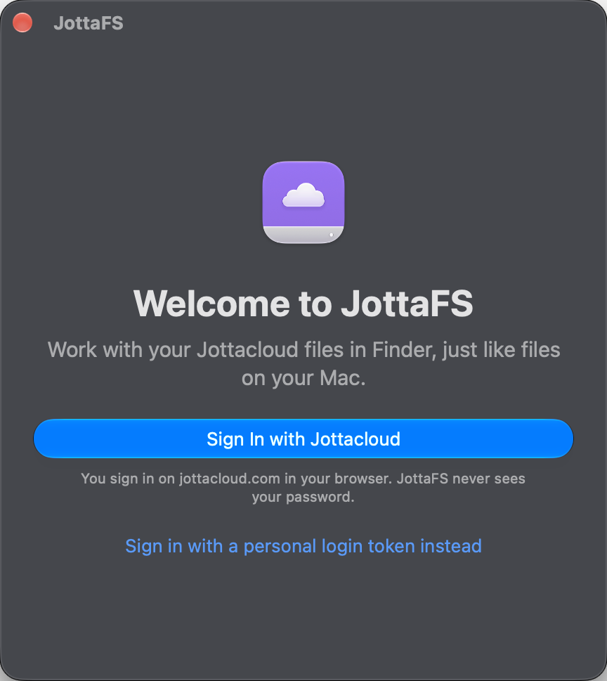
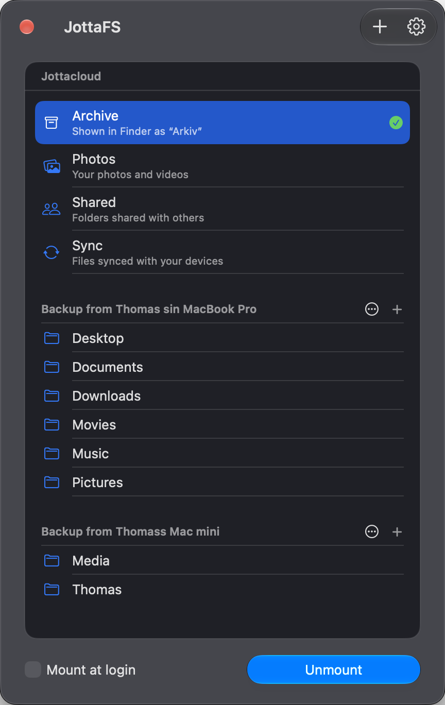

JottaFS mounts your Jottacloud locations as disks on your Mac. Open, copy, change, move and delete files just like on any other drive.
Features
Your files stay in Jottacloud and are downloaded only when you open them. Nothing to sync, and no copy of your whole archive filling up your Mac.
Mount Archive, Sync, Shared, Photos or a folder from a computer backup. Each one shows in Finder as its own disk, and you can mount several at once.
Open, copy, change, rename, move and delete files and folders. JottaFS sends every change to Jottacloud.
File icons show a progress bar while they upload. A Finder copy finishes only when the upload is complete, so you know your files are safe.
If the network drops in the middle of a large upload, JottaFS tries again and continues from the last part that was saved.
Move to Trash, Put Back and Empty Trash use the Jottacloud trash, so deleted files can be restored on the web and on your other devices.
Control-click a file or folder and choose Copy Jottacloud Link. Stop sharing it again from the same menu.
Choose the locations you want, and JottaFS mounts them quietly every time you log in. No window opens.
Folder lists are kept briefly, so large folders open quickly. Recently opened files are cached on your Mac and open again instantly.
Create a backup device and add locations to it or to any other backup device. Move a location to the trash, or delete a whole backup device.
Finder's own files, such as .DS_Store and the ._ files with tags and comments, stay on your Mac and never reach your cloud.
The app follows your Mac's language. In Norwegian, Archive, Sync, Shared and Photos become Arkiv, Synk, Delt and Bilder, also as disk names.
JottaFS tells you when a new version is out, even when the app isn't open. Click Update and it reopens with the new version.
The app
Sign in on jottacloud.com in your browser, or use a personal login token. JottaFS never sees your password.


How it works
JottaFS uses Apple FSKit, the file system framework in macOS. No macFUSE, no kernel extension, and no changes to your Mac's security settings.
Drag JottaFS to Applications, or install it with Homebrew.
Allow the JottaFS file system extension once in System Settings. The app shows you where.
Sign in with Jottacloud in your browser, or paste a personal login token.
Select a location and click Mount. It opens in Finder as a disk next to Macintosh HD.
Trash
Finder's Trash shows the items in the Jottacloud trash that come from the mounted location. Before JottaFS deletes anything permanently, it makes sure the item is already in the Jottacloud trash.
| In Finder | In Jottacloud |
|---|---|
| Move to Trash | Moves the item to the Jottacloud trash. |
| Put Back | Restores the item to its original location. |
| Delete Immediately | Deletes the item permanently. |
| Empty Trash | Deletes all items in the Trash of this disk permanently. |
rm in Terminal | Deletes the item permanently, as on a local disk. |
Privacy
id.jottacloud.com sign-in.Good to know
" * : < > ? | % \ can't be stored by Jottacloud. JottaFS shows a notification with the names, so you can rename them.Install
Requires a Mac with Apple silicon, macOS 27 or later, and a Jottacloud account.
Add the tap once, then install the app:
brew tap thomas-alrek/jottafs https://github.com/thomas-alrek/JottaFS brew install --cask thomas-alrek/jottafs/jottafs